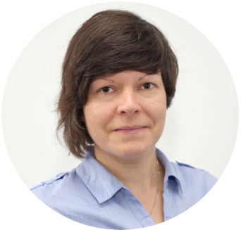

Curriculum Vitae – Ari Eszter

Bioinformatikus kutató, Egyetemi oktató
Weboldalak
- Csoport weboldal: Bioinformatika Kutatócsoport az Eötvös Loránd Tudományegyetemen (ELTE)
- Személyes weboldal az ELTE-n
- Személyes weboldal a Szegedi Biológiai Kutatóközpontban
- Publikus helyek:


Munkahelyek
Aktuális
Egyetemi docens – ELTE Eötvös Loránd Tudományegyetem, Genetikai Tanszék, Budapest
1117, Budapest, Pázmány Péter stny. 1/C
- 2025 - : Többféle bioinformatikai kurzus fejlesztése és oktatása MSc és PhD hallgatók számára, szakdolgozati és PhD témavezetés. A Molekuláris genetika, sejt- és fejlődésbiológia MSc specializáció felelőse.
- 2019 - 2025: egyetemi adjunktus
- 2009 - 2019: tanársegéd
- 2007 - 2009: tudományos segédmunkatárs
Tudományos munkatárs – HUN-REN1 Szegedi Biológiai Kutatóközpont (SZBK), Biokémiai Intézet, Szeged
6726, Szeged, Temesvári krt. 62
- 2016 - : Az antibiotikum rezisztencia és a virulencia evolúciójának kutatása összehasonlító genomikai és filogenetikai módszerek segítségével, Papp Balázs csoportjában. 2020 óta projektvezetőként.
Tudományos munkatárs – Hungarian Centre of Excellence for Molecular Medicine (HCEMM), Metabolikus Rendszerbiológia Kutatócsoport, Szeged
- 2019 -
Tudományos munkatárs – HUN REN Támogatott Kutatócsoportok Irodája
- 2025 -
Korábban
Posztdoktor kutató – Állatorvostudományi Egyetem (Vet-Med), Populációgenetikai Intézet, Bécs, A
- 2012 - 2014: Különböző hőmérséklethez adaptálódott muslica populációk RNA-Seq adatainak feldolgozása, Christian Schlötterer csoportjában.
Diplomák és Fokozatok
- Habilitáció: ELTE, Budapest, 2023
- PhD: Biológia Doktori Iskola, ELTE, Budapest, 2012
- Egyetemi diploma (osztatlan képzés): Szent István Egyetem (SZIE), Állatorvostudományi Kar2, Budapest, 2004
Díjak és Ösztöndíjak
- Az ELTE Egyetemi Kiválósági Alap Kiemelkedő tudományos publikáció díja, 2024, Budapest
- Az ELTE Egyetemi Kiválósági Alap Kiemelkedő tudományos publikáció díja, 2022, Budapest
- Junior fellowship, Collegium Budapest – Institute for Advanced Study, 2009, Budapest
- Az Állatorvostudományi Kar Ösztöndíja, Szent István Egyetem, 2003 - 2004, Budapest
- 2. helyezés az Állatorvostudományi Kar TDK Konferenciáján, Szent István Egyetem, 2003, Budapest
Pályázatok
- Támogatott Kutatócsoportok Programja 2025 - 2027: Szerep: Társpályázó; Cím: Genomic surveillance for precision therapies against antibiotic-resistant bacteria; Vezető kutató: Papp Balázs; Szám: TKCS-2024/66; az ELTE-re elnyert összeg: 30 000 000 Ft
- ELTE nemzetközi online kurzusok megtartására 2025: az “Omikai adatok elemzése GY” bekerült a CHARM-EU kurzusai közé ; 500 000 HUF
- NKFIH OTKA PD 2020 - 2023: Szerep: Vezető kutató; Cím: Hogyan jönnek létre a “szuperbaktériumok”? - Rezisztencia- és virulenciagének átadásának szisztematikus vizsgálata a humán mikrobiom és patogén baktériumok között; szám: 131839; 25 500 000 Ft
- Kiemelten magas színvonalú oktatási tevékenység támogatása, ELTE 2020: Szerep: Vezető kutató; Cím: Számítógépes oktatási termében lévő infrastruktúra fejlesztése; 4 000 000 Ft
- Visegrad 4 Eastern Partnership (V4Eap) 2014 - 2015: Szerep: Témavezető; Zeljko Popovic ösztöndíjához kapcsolódva; Cím: DORMANCYbase – developing a database on gene and protein expression during dormancy in animals; 3 000 EUR
Oktatási Tevékenység
Jelenleg
- Bioinformatika (EA, GY; EN) – MSc hallgatóknak (az előadások és gyakorlatok fele, a kurzus kidolgoása)
- Bioinformatikai szemináriumok (EA; EN) – PhD hallgatóknak
- Omikai adatok elemzése (GY; EN) – MSc hallgatóknak (a gyakorlatok fele, a kurzus kidolgoása). A kurzus bekerült a CHARM-EU kínálatába is.
- Haladó R programozás biológusoknak
Korábban
- Bevezetés a bioinformatikába (EA; HU) – BSc hallgatóknak (a kurzus kidolgozása, jelenleg egy előadás)
- Alapozó bioinformatika (EA; HU) – BSc hallgatóknak (a kurzus kidolgozása)
- Genetika gyakorlat (néhány GY; HU) – BSc hallgatóknak
- Genomika (néhány EA; EN, HU) – MSc hallgatóknak
- Molekuláris Evolúció (néhány, EA; HU) – MSc hallgatóknak
- Evolúcióbiológia (néhány, EA; HU) – MSc hallgatóknak
- Diszkrét matematikai módszerek a biológiában (EA, GY; HU) – MSc és PhD hallgatóknak
Egyetemi Jegyzet
- Genetikai gyakorlatok: 7. Bioinformatika – Genetikai betegségek megismerése és kimutatása (HU)
Egyéb Oktatással Kapcsolatos Tevékenységek
Doktori disszertáció bíráló (4); Doktori védésen titkár (4); Doktori védésen bizottsági tag (5); Komplex vizsgán vizsgáztató – ELTE, Pázmány Péter Katolikus Egyetem, Magyar Agrár- és Élettudományi Egyetem, Semmelweiss Egyetem, Debreceni Egyetem (6); MSc záróvizsgáztató (5); Országos Tudományos Diákköri Konferencián zsűritag (4)
ELTE Molekuláris genetika, sejt- és fejlődésbiológia MSc specializáció felelőse
Témavezetés és Mentorálás
- Személyes lap az Országos Doktori Tanács honlapján
- Folyamatban lévő témavezetések: 2 társ-témavezetett PhD hallgató, 2 MSc, 2 BSc, 3 TDK hallgató
- Végzett hallgatók: 4 társ-témavezetett PhD, 6 MSc, 12 BSc, 6 TDK hallgató – közülük 1 OTDK 2. helyezés
- Vendéghallgató mentorálás: 1 (Egyetemi tanulmányokat külföldön folytató magyar hallgatók nyári gyakorlatának támogatása c. pályázattal)
Fontosabb Workshopok
Oktatóként
- ELTE Kárpát-medencei Magyar Nyári Egyetem, 2022: A magyarországi COVID-járványt meghatározó vírusváltozatok genetikai vizsgálata
- Practical Course on Next Generation Sequencing for Population Genetics and Experimental Evolution, 2014 Vet-Med Uni Bécs, Ausztria: RNA-Seq adatelemzés gyakorlat
Részvevőként
- EMBO Training: Laboratory Leadership Course, 2024, Budapest
- An R Reproducibility Toolkit for the practical researcher, 2022, online
- 8th International Course in Microbial Ecology – Microbiome Metagenome Analysis, 2017, CNR-ISE, Verbania, I
- EMBO course: Bioinformatics and Comparative Genome Analyses, 2011, Inst. Pasteur Paris, F
- Computational Phyloinformatics Course, 2008, Duke Univ., Durham, NC, USA
- Workshop on Molecular Evolution, 2006, Marine Biological Lab., Woods Hole, MA, USA
Idegen Nyelvek
- Angol – tárgyalási szint (C1, középfokú nyelvvizsga)
- Olasz – alapfokú nyelvvizsga
Érdeklődési Területek
- Bioinformatika
- Evolúcióbiológia
- Antibiotikum-rezisztencia
- Összehasonlító genomika
- Molekuláris filogenetika
- Metagenomika
- Transzkriptomika
- Transzkripciós szabályozás
- Adatelemzés
Szakmai Készségek
- Különböző bioinformatikai módszerek, szoftverek és pipeline-ok professzionális használata és fejlesztése.
- R programozási nyelv – professzionális szint
- Linux Shell szkriptek – haladó szint
Szerkesztői, Bírálói és Konferencia Szervezői Tevékenység
- Téma szerkesztő (topic editor) a Frontiers in Systems Biology folyóiratnál
- Bírálat készítés a következő folyóiratokban: Brief. Bioinformatics (3); Evol. Biol. (1); Genome Biol. Evol. (1); J. Math. Chem. (4); Mol. Ecol. (1); Mol. Phylogenetics Evol. (1); Sci. Rep. (1); Opusc. Zool. (1); Plos One (2)
- Bírálat: PhD disszertáció: (4), pályázatok: NKFI OTKA (3)
- OTDK zsűri tag (4)
- Tudományos szervezőbizottsági tagként konferencia szervezés: A Magyar Élettani Társaság (MÉT), a Magyar Biofizikai Társaság (MBFT), Magyar Mikrocirkulációs és Vaszkuláris Biológiai Társaság (MMVBT) és a Magyar Bioinformatikai Társaság (MABIT) Közös Konferenciája, 2025. szep. 2-5, Szeged
Tudománynépszerűsítés
- ELTEFeszt TTK előadás: Lesz-e a coliból szuperbaktérium? 2022, Budapest
- A magyarországi COVID-járványt meghatározó vírusváltozatok genetikai vizsgálata weboldal létrehozása
- Tudományok Fővárosa előadás: A magyar koronavírus genomok evolúciós vizsgálata, 2020, Budapest
- Kutatók Éjszakája előadás: 2018 és 2020
Szakmai Weboldalak
Publikációk
 (10020542)
(10020542)- Megjelent publikációk száma: 27 (D1: 17 + Q1: 5)
- Első, utolsó vagy levelező szerzős publikációk száma: 8
- Első, utolsó vagy levelező szerzős publikációk összesített impakt faktora (IF): 47.22
- Összes publikáció összesített impakt faktora (IF): 218.56
- Összes publikáció független idézőinek száma (IC): 656
- h-index: 15
Megjelenés Előtt
- Balogh GM, Koncz B, Asztalos L, Ari E, Papp B, Szebeni GJ, Gémes N, Pál C & Manczinger M (2025) C>U mutations generate immunogenic peptides in SARS-CoV-2. Nature Communications, bírálat alatt.
Megjelent
Daruka L, Czikkely MS, Szili P, Farkas Z, Balogh D, Maharramov E, Vu TH, Sipos L, Vincze BD, Grézal G, Juhász Sz, Dunai A, Daraba A, Számel M, Sári T, Stirling T, Vásárhelyi BM, Ari E, Christodoulou C, Manczinger M, Enyedi MZs, Jaksa G, van Houte S, Pursey E, Papp CG, Szilovics Z, Pintér L, Haracska L, Gácser A, Kintses B, Papp B & Pál Cs (2025) ESKAPE pathogens rapidly develop resistance against antibiotics in development. Nature Microbiology, 10(2): 313-331. D1, IF: 20.50, IC: 17
Koncz M, Stirling T, Mehdi HH, Méhi O, Eszenyi B, Asbóth A, Apjok G, Tóth Á, Orosz L, Vásárhelyi BM, Ari E, Daruka L, Polgár TF, Schneider Gy, Zalokh SA, Számel M, Fekete G, Bohár B, Nagy Varga K, Visnyovszki Á, Székely E, Licker MS, Izmendi O, Costache C, Gajic I, Lukovic B, Molnár Sz, Szőcs-Gazdi UO, Bozai Cs, Indreas M, Kristóf K, Van der Henst C, Breine A; Pál C, Papp B & Kintses B (2024) Genomic surveillance as a scalable framework for precision phage therapy against antibiotic-resistant pathogens. Cell, 187(21): 5901 - 5918.e28. D1, IF: 45.50, IC: 13
Turek C, Ölbei M, Stirling T, Fekete G, Tasnádi E, Gul L, Bohár B, Papp B, Jurkowski W & Ari E* (2024) mulea - an R package for enrichment analysis using various ontologies and empirical false discovery rate. BMC Bioinformatics, 25(1): 334. Q1, IF: 2.90, IC: 0 (*levelező szerző)
Gerber D, Szeifert B, Székely O, Egyed B, Gyuris B, Giblin JI, Horváth A, Köhler K, Kulcsár G, Kustár Á, Major I, Molnár M, Palcsu L, Szeverényi V, Fábián S, Mende BG, Bondár M, Ari E*, Kiss V* & Szécsényi-Nagy A* (2023) Interdisciplinary analyses of Bronze Age communities from Western Hungary reveal complex population histories. Molecular Biology and Evolution, 40(9): msad182. D1, IF: 11.00, IC: 9 (*megosztott levelező szerző)
Bacsur P, Rutka M, Resál T, Szántó K, Jójárt B, Bálint A, Ari E, Walliyulah A, Kintses B, Fehér T, Asbóth A, Pigniczki D, Bor R, Fábián A, Maléth J, Szepes Z, Farkas K & Molnár T (2023) Effects of bowel cleansing on the composition of the gut microbiome in inflammatory bowel disease patients and healthy controls. Therapeutic Advances in Gastroenterology, 16: 17562848231174298. Q1, IF: 3.90, IC: 7
Sturm Á, Saskői É, Hotzi B, Tarnóci A, Barna J, Bodnár F, Sharma H, Kovács T, Ari E, Weinhardt N, Kerepesi C, Perczel A, Ivics Z & Vellai T (2023) Downregulation of transposable elements extends lifespan in Caenorhabditis elegans. Nature Communications, 14(1): 5278. D1, IF: 14.70, IC: 19
Ari E, Vásárhelyi BM, Kemenesi G, Tóth GE, Zana B, Somogyi B, Lanszki Z, Röst G, Jakab F, Papp B & Kintses B (2022) A single early introduction governed viral diversity in the second wave of SARS-CoV-2 epidemic in Hungary. Virus Evolution, 8(2): veac069. D1, IF: 5.30, IC: 4
Csabai L, Fazekas D, Kadlecsik T, Szalay-Bekő M, Bohár B, Madgwick M, Módos D, Ölbei M, Gul L, Sudhakar P, Kubisch J, Oyeyemi OJ, Liska O, Ari E, Hotzi B, Billes VA, Molnár E, Földvári-Nagy L, Csályi K, Demeter A, Pápai N, Koltai M, Varga M, Lenti K, Farkas IJ, Türei D, Csermely P, Vellai T & Korcsmáros T (2022) SignaLink3: A multi-layered resource to uncover tissue-specific signaling networks. Nucleic Acids Research, 50(D1): 701-709. D1, IF: 14.90, IC: 28
Liska O, Bohár B, Hidas H, Korcsmáros T, Papp B, Fazekas D & Ari E* (2022) TFLink: An integrated gateway to access transcription factor - target gene interactions for multiple species. Database, 2022, baac083. D1, IF: 5.80, IC: 85 “High impact paper” a scientometrics.org szerint. (*levelező szerző)
Bálint A, Farkas K, Kintses B, Méhi O, Vásárhelyi BM, Ari E, Pál C, Madácsy T, Maléth J, Szántó KJ, Nagy I, Rutka M, Bacsur P, Szűcs D, Szepes Z, Nagy F, Fábián A, Bor R, Milassin Á & Molnár T (2020) Functional anatomical changes in ulcerative colitis patients determine their gut microbiota composition and consequently the possible treatment outcome. Pharmaceuticals, 13(11): 346-362. D1, IF: 5.68, IC: 24
Kintses B, Jangir PK, Fekete G, Számel M, Méhi O, Spohn R, Daruka L, Martins A, Hosseinnia A, Gagarinova A, Kim S, Phanse S, Csörgö B, Györkei Á, Ari E, Lázár V, Faragó A, Nagy I, Babu M, Pál C & Papp B (2019) Chemical-genetic profiling reveals limited cross-resistance between antimicrobial peptides with different modes of action. Nature Communications, 10(1): 5731. D1, IF: 12.12, IC: 41
Kintses B*, Méhi O*, Ari E*, Számel M, Györkei Á, Jangir PK, Nagy I, Pál F, Fekete G, Tengölics R, Nyerges Á, Likó I, Bálint A, Molnár T, Bálint B, Vásárhelyi BM, Bustamante M, Papp B & Pál C (2019) Phylogenetic barriers to horizontal transfer of antimicrobial peptide resistance genes in the human gut microbiota. Nature Microbiology, 4(3): 447-458. D1, IF: 15.54, IC: 85 Craig MacLean ajánlásával F1000Prime, mint a tudományterület nagy hatású munkája. Beválogatták a Nature Gut Microbiota core collection-ba. (*megosztott első szerzőség)
Sudhakar P, Claire-Jacomin A, Hautefort I, Samavedam S, Fatemian K, Ari E, Gul L, Demeter A, Jones E, Korcsmaros T & Nezis JP (2019) Targeted interplay between bacterial pathogens and host autophagy. Autophagy, 15(9): 1620-1633. D1, IF: 11.06, IC: 42
Sun D, Ren X, Ari E, Korcsmaros T, Csermely P & Wu L-Y (2019) Discovering cooperative biomarkers for heterogeneous complex disease diagnoses. Briefings in Bioinformatics, 20(1): 89-101. D1, IF: 9.10, IC: 15
Nyerges Á, Csörgő B, Draskovits G, Kintses B, Szili P, Ferenc Gy, Révész T, Ari E, Nagy I, Bálint B, Vásárhelyi BM, Bihari P, Számel M, Balogh D, Papp H, Kalapis D, Papp B & Pál C (2018) Directed evolution of multiple genomic loci allows the prediction of antibiotic resistance. Proceedings of the National Academy of Sciences of the United States of America, 115(25): E5726-E5735. D1, IF: 9.58, IC: 77
Fodor E, Sigmond T, Ari E, Lengyel K, Takács-Vellai K, Varga M & Vellai T (2017) Methods to study autophagy in zebrafish. Methods in Enzymology, 588: 467-96. Q1, IF: 1.48, IC: 21
Métris A, Sudhakar P, Fazekas D, Demeter A, Ari E, Ölbei M, Branchu P, Kingsley RA, Baranyi J & Korcsmáros T (2017) SalmoNet, an integrated network of ten Salmonella enterica strains reveals common and distinct pathways to host adaptation. Npj Systems Biology and Applications, 3(1): s41540-17-34-NaN-17. Q1, IF: 3.81, IC: 29
Ricotta C, Ari E, Bonanomi G, Giannino F, Heathfield D, Mazzoleni S & Podani J (2017) Spatial analysis of phylogenetic community structure: New version of a classical method. Community Ecology, 18(1): 37-46. Q2, IF: 0.98, IC: 2
Ács É, Ari E, Duleba M, Dressler M, Genkal SI, Jakó É, Rimet F, Ector L & Kiss KT (2016) Pantocsekiella, a new centric diatom genus based on morphological and genetic studies. Fottea, 16(1): 56-78. Q2, IF: 0.60, IC: 53
Ari E* & Jakó É (2016) Classification of tRNA isoacceptor sequences by using graph-based molecular descriptors. Journal of Chemometrics, 30(1): 182-187. Q2, IF: 2.03, IC: 0 (*levelező szerző)
Módos D, Brooks J, Fazekas D, Ari E, Vellai T, Csermely P, Korcsmáros T & Lenti K (2016) Identification of critical paralog groups with indispensable roles in the regulation of signaling flow. Scientific Reports, 6: 38588. D1, IF: 4.62, IC: 6
Földvári-Nagy L, Ari E, Csermely P, Korcsmáros T & Vellai T (2014) Starvation-response may not involve Atg1-dependent autophagy induction in non-unikont parasites. Scientific Reports, 4: 5829. D1, IF: 5.85, IC: 16
Ari E*, Ittzés P, Podani J, Le Thi QC & Jakó É (2012) Comparison of Boolean analysis and standard phylogenetic methods using artificially evolved and natural mt-tRNA sequences from great apes. Molecular Phylogenetics and Evolution, 63(1): 193-202. D1, IF: 4.42, IC: 5 (*levelező szerző)
Boros G, Cech G, Ari E & Dózsa-Farkas K (2010) Extension of employing ITS region in the investigation of Hungarian Fridericia species (Oligochaeta: Enchytraeidae). Zoology in the Middle East, 51(sup2): 23-30. Q3, IF: 0.30, IC: 2
Tihanyi B, Vellai T, Regős Á, Ari E, Müller F & Takács-Vellai K (2010) The C. elegans Hox gene ceh-13 regulates cell migration and fusion in a non-colinear way. Implications for the early evolution of Hoxclusters. BMC Developmental Biology, 10(1): 78-92. Q1, IF: 2.78, IC: 26
Jakó É, Ari E, Ittzés P, Horváth A & Podani J (2009) BOOL-AN: A method for comparative sequence analysis and phylogenetic reconstruction. Molecular Phylogenetics and Evolution, 52(3): 887-897. D1, IF: 3.88, IC: 30
Ari E, Ittzés P, Podani J & Jakó É (2008) Phylogenetic tree reconstruction with a new discrete mathematical method. Kitaibelia, 13: 209-211. Q2, IF: 0.23, IC: 0
Konferencia Előadások
- Nemzetközi konferencia előadások száma: 9
- Hazai konferencia előadások száma: 6
- Meghívott előadóként*: 3
- Ari E, et al. (2024) mulea - egy többféle ontológiát és empirikus FDR-t alkalmazó dúsulást vizsgáló R csomag. Bioinformatika, a Magyar Tudomány Ünnepén, nov. 8. Budapest
- Ari E, et al. (2024) mulea - an R package for enrichment analysis using multiple ontologies and empirical false discovery rate. SciComp24 Conference, okt. 17-19. Szeged
- Ari E, et al. (2023) Global map of evolutionary dependencies between antibiotic resistance and virulence genes in E. coli. 3rd HCEMM PhD-POSTDOC Symposium, nov. 8-9. Keszthely
- Ari E, et al. (2022) Global map of evolutionary dependencies between antibiotic resistance and virulence genes in E. coli. 1st Bioinformatics and Data Science in Genomic Studies (BDG2022) online, nov. 25. Debreceni Egyetem
- Ari E, et al. (2022) Lesz-e az E. coli-ból szuperbaktérium? – Az antibiotikum-rezisztencia- és virulenciagének evolúciós függőségeinek vizsgálata. Bioinformatika, a Magyar Tudomány Ünnepén, nov. 11. Budapest
- Ari E*, Kintses B (2020) A mikrobiom vizsgálati módszerei és az eredmények értelmezése. Magyar Gasztroenterológiai Társaság, Colon Szekció 2020. évi Tudományos Ülés, már. 6-7. Visegrád
- Ari E, et al. (2019) Phylogenetic barriers to horizontal transfer of antimicrobial peptide resistance genes in the human gut microbiota. EvolBiol Day, ápr. 17. Szeged
- Ari E*, et al. (2018) Vajon mennyire terjednek az antimikrobiális peptid rezisztencia gének? Bioinformatika, a Magyar Tudomány Ünnepén, nov. 16. Budapest
- Ari E: (2017) MulEA – A tool for multi-enrichment analysis. 2nd Interdisciplinary Signaling Workshop, júl. 17-21. Visegrád
- Ari E*: (2012) Molecular phylogenetic reconstructions with a discrete mathematical method, the Boolean analysis. A Magyar Mikrobiológiai Társaság 2012. évi Nagygyűlése, okt. 24-26. Keszthely
- Ari E & Jakó É (2012) Comparison of Boolean analysis and standard phylogenetic methods using artificially evolved and natural mt-tRNA sequences from great apes. 9th Joint Conference on Mathematics and Computer Science, feb. 9-12. Siófok
- Ari E, et al. (2007) Boolean analysis: A new discrete mathematical method for phylogenetic reconstruction. From Molecular Informatics to Bioinformatics – International Symposium, ápr. 19-21. Collegium Budapest
- Ari E & Jakó É (2007) Testing a new discrete mathematical method for phylogenetic reconstruction. Evolution 2007 Conference, jún. 16-20. Christchurch, NZ
- Ari E & Jakó É (2007) Testing a new discrete mathematical method for phylogenetic reconstruction. The Dumont D’Urville Workshop on Applied Evolutionary Bioinformatics, jún. 24-27. Kaikoura, NZ
- Ari E, et al. (2007) Törzsfa-rekonstrukció diszkrét matematikai módszer segítségével. Molekuláris taxonómiai, filogenetikai és filogeográfiai kutatások Magyarországon, Szakmai találkozó, Diószegi Sámuel emlékére, nov. 17. Debrecen
- Ari E (2006) Reconstructing the phylogenetic tree of great apes by using a new discrete mathematical method. 12th Annual European Meeting of PhD students in Evolutionary Biology, szep. 4-9. St. Andrews, UK
Egyéb Meghívott Előadások
- Ari E* (2025) Pathoadaptive traits shape the spread of antibiotic resistance in Escherichia coli. Imperial College London, Faculty of Medicine, Korcsmáros Group, máj. 20. London, UK
- Ari E* (2017) Investigating the antimicrobial peptide resistome in the human gut microbiome: a metagenomic approach. University of Graz, Institute of Zoology, nov. 15. Graz, A
- Ari E*: (2015) Rapid evolution of phenotypic plasticity during experimental evolution of Drosophila. The Genome Analysis Centre, feb. 23. Norwich, UK
Konferencia Poszter Prezentációk
- Nemzetközi konferencia poszterek száma: 10
- Ari E, et al. (2025) Virulence gene content and ecological niche shape the spread of antibiotic resistance in Escherichia coli, Applied Bioinformatics and Public Health Microbiology 2025, máj. 21-23, Hinxton, UK
- Ari E, et al. (2023) Global map of evolutionary dependencies between antibiotic resistance and virulence genes in E. coli, EMBO Workshop: Plasmids as vehicles of AMR spread, szep. 12-18. (Trieste, I) online
- Ari E, et al. (2023) Global map of evolutionary dependencies between antibiotic resistance and virulence genes in E. coli, EMBO Workshop: Predicting evolution, júl. 11-14. Heidelberg, D
- Ari E, et al. (2022) Global map of evolutionary dependencies between antibiotic resistance and virulence genes in E. coli. Lake Arrowhead Microbial Genomics Conference, szep. 11-15. Lake Arrowhead, CA, USA
- Rutka M, Szántó K, Bacsur P, Resál T, Jójárt B, Bálint A, Ari E, Kintses B, Fehér T, Asbóth A, Pigniczki D, Bor R, Fábián A, Farkas K, Maléth J, Szepes Z & Molnár T (2022) P713 Gut microbiota alterations after bowel preparation amongst inflammatory bowel disease patients. Journal of Crohn’s and Colitis, 16 (Supplement_1): i609. Q1, IF: 9.07
- Ari E, et al. (2019) Phylogenetic barriers to horizontal transfer of antimicrobial peptide resistance genes in the human gut microbiota. Gordon Research Conference on Molecular Mechanisms in Evolution, jún. 9-14. Easton, MA, USA
- Ari E, et al. (2019) Phylogenetic barriers to horizontal transfer of antimicrobial peptide resistance genes in the human gut microbiota. Gordon Research Seminar on Molecular Mechanisms in Evolution, jún. 8-9. Easton, MA, USA
- Ari E & Jakó É (2015) Graph-based generalized Boolean descriptors for classification of biological macromolecules. Conferentia Chemometrica, szep. 13-16. Budapest
- Ari E et al. (2015) Rapid evolution of phenotypic plasticity during experimental evolution of Drosophila. Annual Meeting of the Society for Molecular Biology and Evolution, júl. 12-16. Bécs, A
- Ari E, et al. (2006) Testing a new discrete mathematical method for reconstructing the great apes phylogeny based on mitochondrial tRNAs. Evolution of Biomolecular Structure, máj. 25-27. Bécs, A